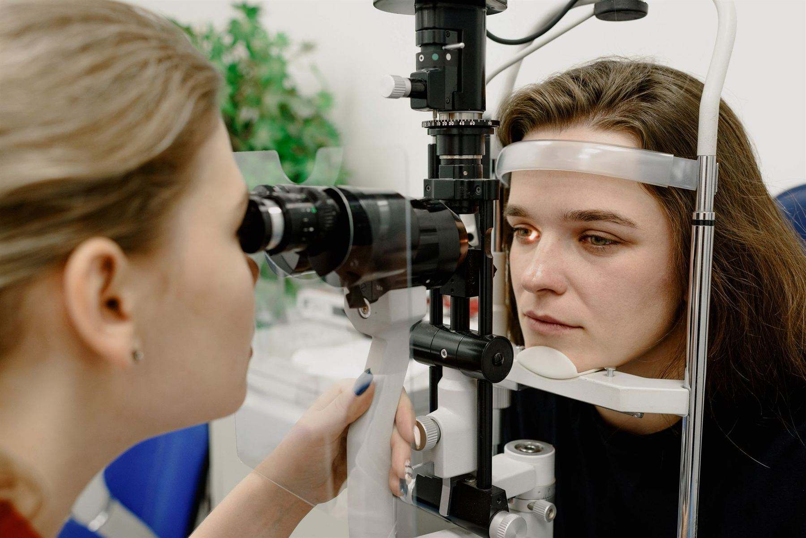

Cataract surgery
Laser-assisted LenSx surgery and advanced lens options, including the Light Adjustable Lens that is fine-tuned after your procedure.
Learn more
Glaucoma
Pressure monitoring, OCT nerve-fiber imaging, drops, laser treatment and surgery to protect your optic nerve for the long term.
Learn more
LASIK and PRK
Laser vision correction for patients who want to depend less on glasses and contacts, beginning with a candidacy exam.
Learn more